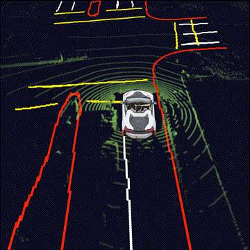
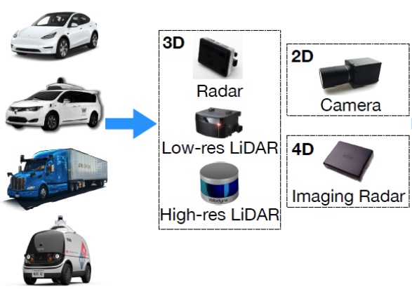
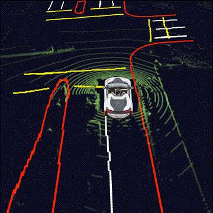
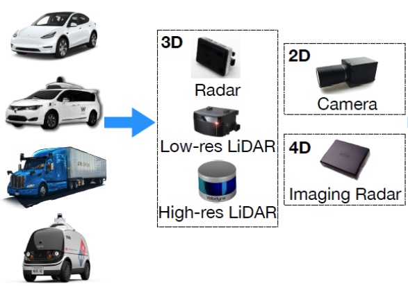

Related Projects on VCAD (Vision-Centric Autonomous Driving)
|
BEV Mapping  HDMapNet |
BEV Detection DETR3D |
BEV Fusion  FUTR3D |
BEV Tracking MUTR3D |
| Webpage | Code | Paper |
An end-to-end map learning framework that generates vectorized HD map from onboard sensor data. To the best of our knowledge, VectorMapNet is the first work designed towards end-to-end vectorized HD map learning problems.
Most recent HD map learning methods use dense primitives (e.g., pixels) to model maps. But learning these dense primitives complicates the pipeline and restricts the model's scalability and performance. In VectorMapNet, we represent map elements as a set of polylines that are easily linked to downstream tasks (e.g., motion forecasting), and model these polylines with a set prediction framework. The overview of our idea is presented in the Figure above.
Our task is to model map elements in the urban environments in a vectorized form using data from onboard sensors, e.g., RGB cameras and/or LiDARs. These map elements include but are not limited to road boundaries, lane dividers, and pedestrian crossings, which are critical for autonomous driving.
There are three key ingredients in our vectorized HD map generation pipeline, as shown in above figure.
Qualitative results generated by VectorMapNet and baselines. We use camera images as inputs for comparisons. The areas enclosed by red and blue ellipses show that VectorMapNet can preserve sharp corners, and polyline representations prevent VectorMapNet from generating ambiguous self-looping results.
An example of VectorMapNet detecting unlabeled map elements. The red ellipse indicates a pedestrian crossing that is missing in ground truth annotations, while VectorMapNet detects it correctly. All the predictions are generated from camera images.
|
BEV Mapping  HDMapNet |
BEV Detection DETR3D |
BEV Fusion  FUTR3D |
BEV Tracking MUTR3D |
If you find our work useful in your research, please cite our paper:
@inproceedings{liu2022vectormapnet,
title={VectorMapNet: End-to-end Vectorized HD Map Learning},
author={Liu, Yicheng and Yuantian, Yuan and Wang, Yue and Wang, Yilun and Zhao, Hang},
booktitle={International conference on machine learning},
year={2023},
organization={PMLR}
}